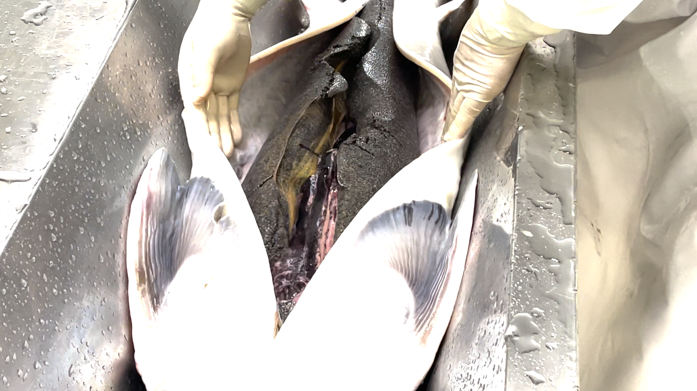
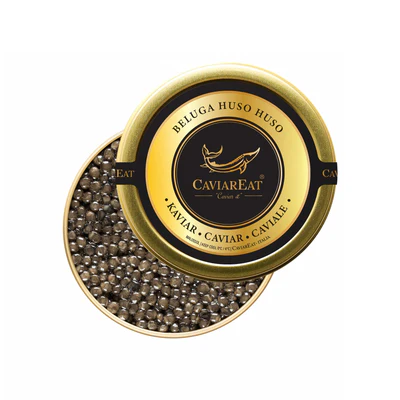

คาเวียร์คืออะไร? เจาะลึกประวัติและประเภทของคาเวียร์ที่คุณควรรู้ [Complete Guide 2025]
คาเวียร์เป็นอาหารหรูที่มีชื่อเสียงระดับโลก แต่หลายคนอาจยังไม่คุ้นเคยกับอาหารชนิดนี้มากนัก
บทความนี้จะพาคุณไปทำความรู้จักกับคาเวียร์ ตั้งแต่ประวัติความเป็นมา ความหมาย
ไปจนถึงประเภทที่น่าสนใจ เพื่อให้คุณเข้าใจเกี่ยวกับอาหารหรูชนิดนี้มากยิ่งขึ้น ไม่ว่าคุณจะเป็นผู้ที่ชื่นชอบอาหารหรู
นักชิม หรือเพียงแค่สนใจเรียนรู้เกี่ยวกับวัฒนธรรมอาหารระดับโลก บทความนี้มีข้อมูลครบถ้วนที่คุณไม่ควรพลาด
คาเวียร์คืออะไร
คาเวียร์ (Caviar) คือไข่ปลาสเตอร์เจียนที่ผ่านกระบวนการถนอมอาหารด้วยเกลือ
ซึ่งถือเป็นอาหารหรูหราที่มีราคาสูงและมีชื่อเสียงทั่วโลก
โดยคาเวียร์แท้จะต้องมาจากไข่ปลาสเตอร์เจียนเท่านั้น
ส่วนไข่ปลาชนิดอื่นที่ผ่านกระบวนการคล้ายกันจะเรียกว่า "ไข่ปลา" หรือ "คาเวียร์ทดแทน"
Key Point: คาเวียร์แท้ (True Caviar) ต้องมาจากไข่ปลาสเตอร์เจียนเท่านั้น ไข่ปลาอื่นๆ
แม้จะถูกแปรรูปคล้ายกัน ไม่สามารถเรียกว่า "คาเวียร์" ได้ตามมาตรฐานสากล
คาเวียร์ได้รับการยกย่องให้เป็นหนึ่งในอาหารหรูชั้นเลิศของโลกมาอย่างยาวนาน
ความพิเศษอยู่ที่รสชาติอันเป็นเอกลักษณ์ เนื้อสัมผัสที่ละเอียดอ่อน และกระบวนการผลิตที่พิถีพิถัน
ทำให้คาเวียร์มีราคาสูงและเป็นที่ต้องการในตลาดอาหารระดับพรีเมียมทั่วโลก
ประวัติความเป็นมาของคาเวียร์

คาเวียร์มีประวัติศาสตร์อันยาวนาน โดยมีการค้นพบหลักฐานการบริโภคไข่ปลาตั้งแต่สมัยกรีกและโรมันโบราณ
แต่คาเวียร์เริ่มได้รับความนิยมอย่างแพร่หลายในราชสำนักของรัสเซียในช่วงศตวรรษที่ 16-17 โดยเฉพาะในสมัยของพระเจ้าซาร์
ภาพบันทึก Huso huso Beluga Sturgeon น้ำหนักราว 1,224 กิโลกรัม (2698 lb) ได้ที่สถานที่ Volga Delta, Russia
เป็นหลักฐานสำคัญที่แสดงถึงขนาดอันน่าทึ่งของปลาสเตอร์เจียนที่เคยพบในอดีต อ้างอิง
ในช่วงศตวรรษที่ 19 รัสเซียกลายเป็นผู้ผลิตและส่งออกคาเวียร์รายใหญ่ที่สุดของโลก
จนทำให้คาเวียร์กลายเป็นสัญลักษณ์ของความหรูหราและเป็นอาหารสำหรับชนชั้นสูงในยุโรปและอเมริกา
Historical Fact: คาเวียร์เคยถูกเสิร์ฟฟรีในบาร์ของรัสเซียในช่วงศตวรรษที่ 19
เพื่อทำให้ลูกค้ากระหายน้ำและสั่งเครื่องดื่มมากขึ้น
ปัจจุบัน คาเวียร์ยังคงเป็นสัญลักษณ์ของความหรูหราและมีการผลิตในหลายประเทศทั่วโลก
แต่ด้วยความตระหนักถึงความยั่งยืนมากขึ้น ทำให้มีการพัฒนาวิธีการผลิตที่ไม่ส่งผลกระทบต่อประชากรปลาในธรรมชาติ
กระบวนการผลิตคาเวียร์

การผลิตคาเวียร์มีขั้นตอนที่พิถีพิถันและต้องใช้ความชำนาญสูง
ทุกขั้นตอนล้วนส่งผลต่อคุณภาพและรสชาติของผลิตภัณฑ์สุดท้าย ซึ่งมีขั้นตอนหลักๆ ดังนี้
- การจับปลาสเตอร์เจียนที่มีอายุเหมาะสม - ส่วนใหญ่อายุ 8-20 ปี ขึ้นอยู่กับสายพันธุ์
- การผ่าท้องปลาเพื่อนำไข่ออกมาอย่างระมัดระวัง -
ในฟาร์มสมัยใหม่มีการใช้วิธีผ่าตัดที่ไม่ทำให้ปลาเสียชีวิต
- การร่อนแยกไข่ออกจากเนื้อเยื่อต่างๆ -
ใช้ตะแกรงพิเศษเพื่อแยกไข่ออกจากเนื้อเยื่อโดยไม่ทำให้เม็ดไข่แตก
- การล้างทำความสะอาดไข่ - ล้างด้วยน้ำเย็นจัดเพื่อรักษาคุณภาพ
- การเติมเกลือในปริมาณที่เหมาะสม - ประมาณ 3-5% ของน้ำหนักไข่ เพื่อถนอมอาหารและเพิ่มรสชาติ
- การบรรจุในภาชนะที่เหมาะสมและเก็บในอุณหภูมิต่ำ - โดยทั่วไปใช้ภาชนะแก้วหรือโลหะเคลือบพิเศษ
Production Insight: ผู้เชี่ยวชาญที่ทำหน้าที่แยกและเตรียมไข่ปลาเรียกว่า "Master Caviar Maker"
ซึ่งต้องใช้เวลาฝึกฝนนานหลายปีและมีประสาทสัมผัสที่ละเอียดอ่อน
ในปัจจุบัน การผลิตคาเวียร์ได้รับการพัฒนาให้มีความยั่งยืนมากขึ้น โดยมีการใช้เทคนิคการผ่าตัดที่ไม่ทำให้ปลาเสียชีวิต
ทำให้สามารถเก็บไข่จากปลาตัวเดียวได้หลายครั้งในช่วงชีวิต ช่วยลดผลกระทบต่อประชากรปลาสเตอร์เจียนในธรรมชาติ
ประเภทของคาเวียร์ที่นิยมทั่วโลก
คาเวียร์มีหลายประเภทแตกต่างกันตามสายพันธุ์ของปลาสเตอร์เจียนที่นำมาผลิต แต่ละประเภทมีลักษณะเฉพาะทั้งในด้านขนาด สี
และรสชาติ โดยประเภทยอดนิยมมีดังนี้
1. Beluga Caviar: คาเวียร์ที่หรูหราที่สุด

เบลูก้าคาเวียร์มาจากปลาสเตอร์เจียนสายพันธุ์เบลูก้า (Huso huso)
ซึ่งเป็นปลาสเตอร์เจียนที่มีขนาดใหญ่ที่สุดและพบได้ในทะเลแคสเปียน คาเวียร์ชนิดนี้มีเม็ดขนาดใหญ่ สีเทาอ่อนถึงดำ
มีรสชาติกลมกล่อมและมีความเค็มน้อย ทำให้เป็นคาเวียร์ที่มีราคาแพงที่สุดในโลก
ปัจจุบันเบลูก้าคาเวียร์เป็นสินค้าหายากเนื่องจากปลาเบลูก้าใกล้สูญพันธุ์
Luxury Fact: เบลูก้าคาเวียร์ที่มีคุณภาพสูงสุดและหายากที่สุดคือ "Almas"
ซึ่งมาจากปลาเบลูก้าอายุมากกว่า 100 ปี มีราคาสูงถึงกิโลกรัมละหลายล้านบาท
2. Osetra Caviar: ความสมดุลของรสชาติ
ออสเซทร้าคาเวียร์มาจากปลาสเตอร์เจียนสายพันธุ์ออสเซทร้า (Acipenser gueldenstaedtii)
ซึ่งพบได้ในทะเลแคสเปียนและทะเลดำ คาเวียร์ชนิดนี้มีเม็ดขนาดกลาง สีทองถึงน้ำตาลเข้ม มีรสชาติเข้มข้นคล้ายถั่ว
จัดเป็นคาเวียร์คุณภาพสูงรองจากเบลูก้า
3. Kaluga Caviar: ทางเลือกที่ดีแทนเบลูก้า
คาลูก้าคาเวียร์มาจากปลาสเตอร์เจียนสายพันธุ์คาลูก้า (Huso dauricus)
ซึ่งเป็นปลาสเตอร์เจียนขนาดใหญ่ที่พบในแม่น้ำอามูร์ ซึ่งเป็นพรมแดนระหว่างรัสเซียและจีน ปลาคาลูก้ามีขนาดใหญ่มาก
สามารถยาวได้ถึง 5.6 เมตรและหนักกว่า 1,000 กิโลกรัม จึงได้รับฉายาว่า "ปลาเบลูก้าแห่งแม่น้ำ"
คาเวียร์จากปลาคาลูก้ามีเม็ดขนาดใหญ่ สีเข้มและมีรสชาติเข้มข้น มีกลิ่นหอมและมีความมันคล้ายกับเบลูก้าคาเวียร์
แต่มีรสชาติแบบถั่วที่ชัดเจนกว่า
Alternative Insight:
คาลูก้าคาเวียร์ได้รับความนิยมเพิ่มขึ้นในช่วงที่เบลูก้าคาเวียร์หายากและมีข้อจำกัดในการนำเข้า
เนื่องจากมีลักษณะคล้ายคลึงกันมาก
4. Baerii Caviar: คาเวียร์คุณภาพดีราคาเข้าถึงได้
แบริอีคาเวียร์มาจากปลาสเตอร์เจียนไซบีเรีย (Acipenser baerii) ซึ่งเป็นสายพันธุ์ที่พบได้ทั่วไปในแม่น้ำไซบีเรีย
โดยเฉพาะในแม่น้ำโอบและแม่น้ำเยนิเซย์ ปัจจุบันมีการเพาะเลี้ยงอย่างแพร่หลายในฟาร์มทั่วโลก
ทำให้เป็นคาเวียร์ที่หาซื้อได้ง่ายที่สุดและมีราคาไม่แพงมากเมื่อเทียบกับคาเวียร์ชนิดอื่นๆ
คาเวียร์ชนิดนี้มีเม็ดขนาดเล็กถึงกลาง สีดำหรือน้ำตาลเข้ม มีรสชาติเข้มข้นและมีกลิ่นหอมเฉพาะตัวคล้ายถั่วและมะกอก
5. Huso Dauricus Caviar: คาเวียร์ระดับพรีเมียม
ฮูโซ เดาริคัสคาเวียร์มาจากปลาสเตอร์เจียนฮูโซ เดาริคัส ซึ่งเป็นอีกชื่อทางวิทยาศาสตร์ของปลาคาลูก้า (Huso dauricus)
ทำให้มีคุณลักษณะที่คล้ายคลึงกับคาลูก้าคาเวียร์
แต่บางครั้งอาจหมายถึงสายพันธุ์ย่อยหรือปลาที่มาจากแหล่งเพาะเลี้ยงเฉพาะ คาเวียร์ชนิดนี้มีเม็ดขนาดใหญ่ สีเทาเข้มถึงดำ
และมีรสชาติเข้มข้นแบบถั่ว
6. Schrenkii Imperial Caviar: คาเวียร์สำหรับเชฟมิชลินสตาร์
ชเร็งคิอี อิมพีเรียลคาเวียร์มาจากปลาสเตอร์เจียนอามูร์ (Acipenser schrenckii)
หรือมาจากปลาลูกผสมระหว่างปลาสเตอร์เจียนอามูร์และปลาคาลูก้า ซึ่งพบในแม่น้ำอามูร์เช่นเดียวกัน
คาเวียร์ชนิดนี้มีลักษณะเด่นคือเม็ดมีขนาดใหญ่ สีน้ำตาลทองหรือน้ำตาลเข้มมีประกายเขียว มีรสชาติกลมกล่อม
ละมุนและมีความสมดุล ปัจจุบันได้รับความนิยมจากเชฟระดับมิชลินสตาร์ทั่วโลก
Chef's Choice: คาเวียร์ชเร็งคิอี
อิมพีเรียลได้รับความนิยมในร้านอาหารระดับมิชลินสตาร์เนื่องจากรสชาติที่สมดุลและคงตัว
ทำให้นำไปประกอบอาหารได้หลากหลาย
การเลือกคาเวียร์ที่เหมาะสมขึ้นอยู่กับรสนิยมส่วนตัว โอกาสในการรับประทาน
และงบประมาณ แต่ละประเภทมีเอกลักษณ์เฉพาะตัวที่น่าค้นหาและลิ้มลอง
คุณค่าทางโภชนาการของคาเวียร์
คาเวียร์ไม่เพียงแต่มีรสชาติที่เป็นเอกลักษณ์ แต่ยังอุดมไปด้วยสารอาหารที่มีประโยชน์ต่อร่างกาย
ทำให้นอกจากจะเป็นอาหารหรูแล้ว ยังเป็นอาหารที่มีคุณค่าทางโภชนาการสูงอีกด้วย
| สารอาหาร |
ประโยชน์ต่อร่างกาย |
| โปรตีนคุณภาพสูง |
ช่วยซ่อมแซมเนื้อเยื่อและสร้างกล้ามเนื้อ |
| กรดไขมันโอเมก้า-3 |
ลดความเสี่ยงของโรคหัวใจและบำรุงสมอง |
| วิตามินบี 12 |
ช่วยในการสร้างเซลล์เม็ดเลือดแดงและระบบประสาท |
| วิตามินดี |
ช่วยในการดูดซึมแคลเซียมและบำรุงกระดูก |
| แร่ธาตุต่างๆ |
แคลเซียม ไอโอดีน เหล็ก และแมกนีเซียม ช่วยในการทำงานของระบบต่างๆ ในร่างกาย |
อย่างไรก็ตาม คาเวียร์มีปริมาณโซเดียมสูงเนื่องจากกระบวนการถนอมด้วยเกลือ จึงควรบริโภคในปริมาณที่เหมาะสม
โดยเฉพาะสำหรับผู้ที่ต้องควบคุมการบริโภคเกลือ
Nutrition Fact: แม้คาเวียร์จะรับประทานในปริมาณน้อย แต่มีคุณค่าทางโภชนาการสูง โดยคาเวียร์เพียง
1 ช้อนโต๊ะให้โปรตีนประมาณ 4 กรัม และมีวิตามินบี 12 ถึง 236% ของปริมาณที่แนะนำต่อวัน
การบริโภคคาเวียร์ในปริมาณที่เหมาะสมเป็นประจำสามารถช่วยเสริมสุขภาพได้หลายด้าน ทั้งการบำรุงสมอง ระบบประสาท
และช่วยให้ผิวพรรณเปล่งปลั่ง
วิธีการรับประทานคาเวียร์ให้ได้รสชาติที่ดีที่สุด
การรับประทานคาเวียร์มีวิธีการเฉพาะเพื่อให้ได้รสชาติที่ดีที่สุด
การเสิร์ฟและอุปกรณ์ที่ใช้ล้วนมีผลต่อประสบการณ์การรับประทาน
ต่อไปนี้คือวิธีการรับประทานคาเวียร์ที่ถูกต้องตามประเพณี:
1. ภาชนะที่เหมาะสม
ควรเสิร์ฟคาเวียร์ในภาชนะที่ไม่ทำปฏิกิริยากับคาเวียร์ เช่น ภาชนะแก้ว กระเบื้อง หรือเปลือกหอยนางรม
ไม่ควรใช้ภาชนะโลหะเพราะอาจทำให้รสชาติเปลี่ยนไป อีกทั้งภาชนะควรแช่เย็นก่อนเสิร์ฟเพื่อรักษาอุณหภูมิที่เหมาะสม
2. อุปกรณ์ที่เหมาะสม
ควรใช้ช้อนที่ทำจากเปลือกหอย กระดูก หรือพลาสติก ไม่ควรใช้ช้อนโลหะ เพื่อหลีกเลี่ยงรสชาติโลหะที่อาจปนเปื้อน
ช้อนที่ผลิตจากเปลือกหอยคัดสรรพิเศษ มีคุณสมบัติอันเป็นเอกลักษณ์ที่ไม่ก่อให้เกิดปฏิกิริยาทางเคมีกับคาเวียร์
ช่วยรักษาความกลมกล่อมและรสชาติของคาเวียร์ไว้ได้อย่างสมบูรณ์
3. อุณหภูมิที่เหมาะสม
นิยมรับประทานคาเวียร์แบบเย็น โดยแช่ภาชนะที่ใส่คาเวียร์ในน้ำแข็ง เพื่อคงรสชาติที่ดีที่สุด
อุณหภูมิที่เหมาะสมสำหรับการเสิร์ฟคาเวียร์คือประมาณ 0-4 องศาเซลเซียส
4. อาหารที่เสิร์ฟคู่กัน
สามารถรับประทานคาเวียร์กับบลินี่ (แพนเค้กบางๆ แบบรัสเซีย) ขนมปังปิ้ง หรือมันฝรั่งอบ
ผู้เชี่ยวชาญแนะนำให้ใช้อาหารที่มีรสชาติเป็นกลางเพื่อไม่ให้กลบรสชาติของคาเวียร์
อาจเสิร์ฟพร้อมกับครีมเปรี้ยวหรือเนยที่ไม่เค็ม
5. เครื่องดื่มที่เข้ากัน
อาจเสิร์ฟพร้อมกับวอดก้าเย็นหรือแชมเปญ ซึ่งช่วยเสริมรสชาติของคาเวียร์ แชมเปญคูเว่หรือแชมเปญบรูต (Brut)
เป็นตัวเลือกที่นิยมเนื่องจากความกลมกล่อมและความสดชื่นที่ช่วยล้างรสมันของคาเวียร์
Serving Tip: วิธีชิมคาเวียร์ให้ได้รสชาติที่ดีที่สุดคือ
วางเม็ดคาเวียร์บนหลังมือระหว่างนิ้วโป้งและนิ้วชี้ แล้วค่อยๆ ลิ้มรสให้ละลายบนลิ้น
ซึ่งเป็นวิธีดั้งเดิมของชาวรัสเซีย
การชิมคาเวียร์ควรค่อยๆ ชิมทีละน้อย และให้เวลาตัวเองสัมผัสรสชาติที่ซับซ้อน
เพื่อให้ได้ประสบการณ์ที่พิเศษและเต็มอิ่มกับรสชาติของอาหารหรูชนิดนี้ สามารถดูคู่มือการชิมคาเวียร์เพิ่มเติมเพื่อเรียนรู้วิธีการชิมแบบมืออาชีพ
ตลาดคาเวียร์ในปัจจุบันและแนวโน้มในอนาคต
ในปัจจุบัน ประชากรปลาสเตอร์เจียนในธรรมชาติลดลงอย่างมาก ทำให้มีการควบคุมการจับและการค้าปลาสเตอร์เจียนอย่างเข้มงวด
การเพาะเลี้ยงแบบยั่งยืนจึงกลายเป็นทางออกสำคัญของอุตสาหกรรมคาเวียร์ระดับโลก
หลายประเทศได้พัฒนาฟาร์มเพาะเลี้ยงปลาสเตอร์เจียนเพื่อผลิตคาเวียร์แบบยั่งยืน ประเทศผู้ผลิตคาเวียร์ชั้นนำในปัจจุบัน
ได้แก่
- อิหร่าน - ผู้ผลิตคาเวียร์จากทะเลแคสเปียนที่มีประวัติศาสตร์ยาวนาน
- รัสเซีย - ประเทศที่มีประเพณีการผลิตคาเวียร์มายาวนาน
- จีน - ผู้ผลิตคาเวียร์รายใหญ่ที่มีการพัฒนาฟาร์มเพาะเลี้ยงอย่างรวดเร็ว
- อิตาลี - ผู้นำในการผลิตคาเวียร์จากฟาร์มในยุโรป
- ฝรั่งเศส - มีฟาร์มเพาะเลี้ยงที่มีคุณภาพสูงและเน้นความยั่งยืน
- สหรัฐอเมริกา - พัฒนาการเพาะเลี้ยงปลาสเตอร์เจียนเพื่อทดแทนการนำเข้า
Sustainability Focus: ปัจจุบันมีการพัฒนาวิธีการผ่าตัดที่ไม่ทำให้ปลาสเตอร์เจียนตาย
สามารถเก็บไข่ได้ทุก 2-3 ปี ซึ่งช่วยลดผลกระทบต่อประชากรปลาในธรรมชาติ
แนวโน้มตลาดคาเวียร์ในอนาคตมุ่งเน้นความยั่งยืนและคุณภาพมากขึ้น
ผู้บริโภครุ่นใหม่ให้ความสำคัญกับแหล่งที่มาของผลิตภัณฑ์และกระบวนการผลิตที่เป็นมิตรต่อสิ่งแวดล้อม นอกจากนี้
ตลาดคาเวียร์ในเอเชียกำลังเติบโตอย่างรวดเร็ว โดยเฉพาะในจีน ญี่ปุ่น
และประเทศไทยที่นักท่องเที่ยวและชนชั้นกลางระดับสูงมีกำลังซื้อเพิ่มขึ้น
ติดตามเทรนด์ตลาดคาเวียร์ล่าสุดเพื่อข้อมูลเชิงลึกเพิ่มเติมเกี่ยวกับการเติบโตและการพัฒนาของตลาดคาเวียร์ทั่วโลก
Truffleat: แหล่งคาเวียร์คุณภาพระดับโลก

Truffleat มุ่งมั่นในการนำเสนอคาเวียร์คุณภาพสูงสุดที่ผ่านการคัดสรรจากแหล่งผลิตชั้นนำระดับโลก
เรายึดมั่นในมาตรฐานการคัดเลือกที่เข้มงวดและกระบวนการตรวจสอบคุณภาพทุกขั้นตอน
เพื่อให้มั่นใจว่าผลิตภัณฑ์คาเวียร์ของเราทุกชนิดมีความสดใหม่ รสชาติที่สมบูรณ์ และคุณภาพที่เหนือชั้น
กระบวนการจัดหาคาเวียร์ของ Truffleat
เริ่มต้นจากการสร้างความสัมพันธ์อันแน่นแฟ้นกับฟาร์มเพาะเลี้ยงชั้นนำที่ได้รับการรับรองมาตรฐานสากล
ซึ่งมีประวัติการผลิตที่ยาวนานและได้รับการยอมรับจากผู้เชี่ยวชาญทั่วโลก
ทุกฟาร์มที่เราคัดเลือกต้องผ่านเกณฑ์การประเมินด้านสิ่งแวดล้อม ความยั่งยืน และสวัสดิภาพของปลาในระดับสูงสุด
คอลเลกชันคาเวียร์พรีเมียมของเรา
- Beluga Huso Huso Caviar – คาเวียร์ระดับสูงสุดที่หายากและได้รับการยกย่องว่าเป็น
"ราชาแห่งคาเวียร์" นำเข้าจากแหล่งผลิตที่ได้รับการรับรองตามข้อกำหนด CITES เพื่อความยั่งยืนของประชากรปลาในธรรมชาติ
- Royal Baerii Caviar – คาเวียร์คุณภาพสูงที่ได้จากการเพาะเลี้ยงแบบยั่งยืน
มีความสม่ำเสมอทั้งรสชาติและเนื้อสัมผัส ซึ่งผ่านการตรวจสอบคุณภาพตามมาตรฐานยุโรป
- Royal Kaluga Caviar – คาเวียร์ชั้นเลิศที่ผลิตภายใต้การควบคุมคุณภาพที่เข้มงวด
ทุกขั้นตอนการผลิตถูกตรวจสอบโดยผู้เชี่ยวชาญเพื่อให้ได้ผลิตภัณฑ์คุณภาพระดับสากล
- Royal Oscietra Caviar – คาเวียร์ชั้นเลิศที่สืบทอดรสชาติดั้งเดิมจากทะเลแคสเปียน
ผ่านการคัดเลือกอย่างพิถีพิถันเพื่อให้ได้เม็ดที่สมบูรณ์และรสชาติที่เป็นเอกลักษณ์
- Schrenkii Imperial Caviar – คาเวียร์ระดับพรีเมียมที่ได้รับการยอมรับจากเชฟมิชลินสตาร์ทั่วโลก
โดดเด่นด้วยเม็ดขนาดใหญ่ สีน้ำตาลทองมีประกายเขียว และรสชาติที่สมดุลอย่างลงตัว
- Huso Dauricus Caviar – คาเวียร์ระดับพรีเมียมที่ผ่านกระบวนการคัดสรรพิเศษ
ซึ่งรักษาคุณลักษณะดั้งเดิมทั้งด้านรสชาติและคุณค่าทางโภชนาการได้อย่างครบถ้วน
Truffleat ให้ความสำคัญกับการรักษาคุณภาพตลอดห่วงโซ่การขนส่ง
ด้วยระบบการจัดเก็บและการจัดส่งที่ควบคุมอุณหภูมิอย่างเคร่งครัด
คาเวียร์ทุกกระปุกจะถูกบรรจุในบรรจุภัณฑ์เฉพาะที่ออกแบบมาเพื่อรักษาความสดใหม่และคุณภาพตลอดการเดินทางจากแหล่งผลิตจนถึงมือลูกค้า
ทีมผู้เชี่ยวชาญด้านคาเวียร์ของเราได้รับการฝึกอบรมอย่างเข้มข้นและมีประสบการณ์ในวงการคาเวียร์มายาวนาน
พร้อมให้คำแนะนำเกี่ยวกับการเลือกคาเวียร์ที่เหมาะสมกับความต้องการและโอกาสพิเศษต่างๆ
ตลอดจนวิธีการเก็บรักษาและการเสิร์ฟที่ถูกต้องเพื่อให้ได้รสชาติที่ดีที่สุด
ค้นพบคอลเลกชันคาเวียร์พรีเมียมของเรา
คำถามที่พบบ่อยเกี่ยวกับคาเวียร์
คาเวียร์แท้แตกต่างจากไข่ปลาชนิดอื่นอย่างไร?
คาเวียร์แท้ต้องมาจากไข่ปลาสเตอร์เจียนเท่านั้น ซึ่งมีลักษณะเฉพาะทั้งขนาด สี และรสชาติ
ที่แตกต่างจากไข่ปลาชนิดอื่น ไข่ปลาชนิดอื่นที่นิยมบริโภค เช่น ไข่ปลาแซลมอน (Ikura) หรือไข่ปลาเทราต์
ไม่ถือว่าเป็นคาเวียร์ตามมาตรฐานสากล แต่อาจเรียกว่า "คาเวียร์ทดแทน" (Caviar Substitute)
คาเวียร์ราคาแพงเพราะอะไร?
คาเวียร์มีราคาแพงเนื่องจากหลายปัจจัย ได้แก่:
1) ปลาสเตอร์เจียนเติบโตช้าและต้องใช้เวลาหลายปีกว่าจะให้ไข่ได้
2) กระบวนการผลิตที่พิถีพิถันและต้องอาศัยความชำนาญสูง
3) ปลาสเตอร์เจียนในธรรมชาติใกล้สูญพันธุ์ ทำให้มีการควบคุมการจับและการค้าอย่างเข้มงวด
4) ต้นทุนในการเพาะเลี้ยงปลาสเตอร์เจียนสูง
คาเวียร์เก็บรักษาได้นานแค่ไหน?
คาเวียร์ที่ยังไม่เปิดสามารถเก็บรักษาได้นานถึง 4-6 เดือนในอุณหภูมิ -2 ถึง 2 องศาเซลเซียส
หลังจากเปิดแล้วควรบริโภคภายใน 2-3 วันและเก็บในอุณหภูมิเดียวกัน
ไม่ควรแช่แข็งคาเวียร์เพราะจะทำให้เนื้อสัมผัสและรสชาติเปลี่ยนไป
มีวิธีบอกคุณภาพของคาเวียร์อย่างไร?
คาเวียร์คุณภาพดีจะมีลักษณะดังนี้:
1) เม็ดแยกจากกันชัดเจน ไม่แตกหรือติดกันเป็นก้อน
2) มีความมันวาวและสีสม่ำเสมอ
3) มีกลิ่นสดและสะอาด ไม่มีกลิ่นคาว
4) เมื่อรับประทานจะมีรสชาติกลมกล่อม ไม่เค็มเกินไป
5) เม็ดแตกในปากพอดี ไม่แข็งหรือนิ่มเกินไป
ผู้ที่ไม่เคยรับประทานคาเวียร์ควรเริ่มต้นอย่างไร?
สำหรับผู้ที่ไม่เคยรับประทานคาเวียร์มาก่อน แนะนำให้เริ่มต้นจากคาเวียร์ที่มีรสชาติไม่เข้มมากนัก เช่น Royal Baerii
หรือ Oscietra ที่มีรสชาติสมดุลและราคาไม่สูงมากนัก ควรเริ่มชิมในปริมาณน้อยๆ
และให้เวลาตัวเองปรับตัวกับรสชาติที่เป็นเอกลักษณ์ของคาเวียร์
การเสิร์ฟคู่กับครีมเปรี้ยวหรือบลินี่จะช่วยให้การรับประทานครั้งแรกง่ายขึ้น